ES
ES FR
FR PT
PT DE
DE IT
IT RO
RO RU
RUOverview
Soplos Sys Cleaner is an advanced system maintenance tool for Soplos Linux. It safely removes unnecessary files, clears cache, uninstalls old kernels and optimizes the system. It features a dual-layer scanning model — lightweight user-level scans run without requiring a password, while deep administrative scans request credentials only once via pkexec.
The application also includes a resource monitor that tracks CPU, RAM, disk usage, temperature and GPU information in real time directly from the Overview tab.
User Mode
User Mode tabs run without administrative privileges and start scanning automatically on launch.
- Overview: System summary card showing Soplos variant, active kernel, session type, uptime and live resource metrics (CPU, RAM, disk, temperature, GPU).
- Installed Apps: Browse all manually installed packages with search, size information and selective uninstall via pkexec.
- Flatpak: Lists installed Flatpak applications with name, app ID, version and size. Detects and removes unused runtimes, SDK extensions and transitive dependencies.
- Snap: Detects and removes old or disabled Snap revisions to recover disk space.
- User Cache: Safely cleans ~/.cache without requiring root privileges.
- Trash: Empties the user trash without requiring administrative privileges.
Admin Mode
Admin Mode tabs are revealed after a single pkexec authentication and perform deep system-wide cleaning.
- Drivers: Detects and removes unused driver packages with full hardware awareness. GPU drivers (AMD, Intel, NVIDIA) are protected when the corresponding hardware is detected. Extended detection covers VM guest tools (VirtualBox, VMware, KVM/QEMU, Hyper-V, Xen), printer drivers (HP, Epson, Canon, Brother, Samsung, Kyocera), Wacom tablets and Broadcom proprietary Wi-Fi — each only shown as removable when the corresponding device is absent.
- Firmwares: Lists firmware families with actual disk usage. Hardware protection prevents removal of critical network firmwares, GPU firmwares and active kernel modules.
- Kernels: Identifies and removes old kernel packages to free boot partition space. Integrates with Soplos system tools — the active kernel is always protected.
- Languages & Docs: Advanced scanner that removes unused locale files and documentation for GNOME, KDE and XFCE while protecting your active system languages and English.
- APT Cache: Lists individual cached .deb files for selective removal — clean only what you choose instead of wiping everything at once.
- Temp Files: Removes apt lists, root ~/.cache, __pycache__ directories and crash reports. Socket files, symlinks and D-Bus sockets are excluded automatically.
- System Logs: Clears /var/log entries. Scans over 15 critical system paths tailored for Boro, Tyron and Tyson.
Screenshots
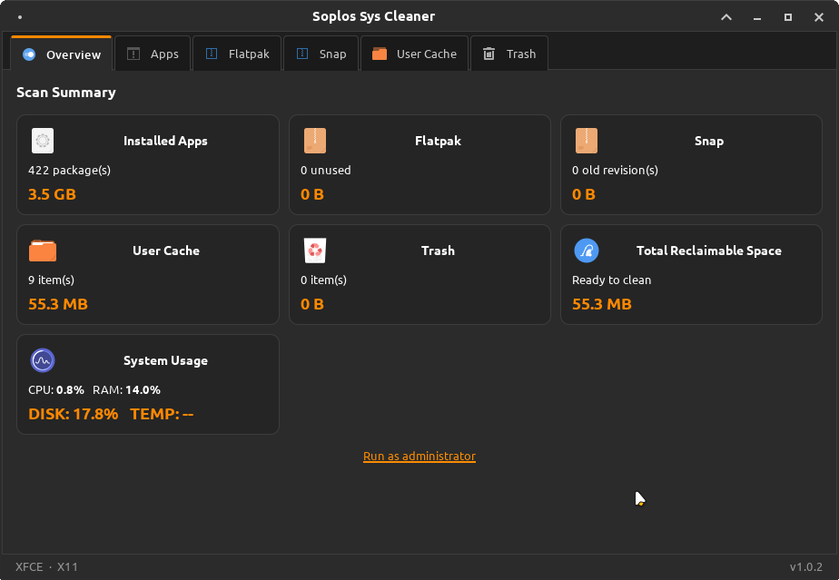
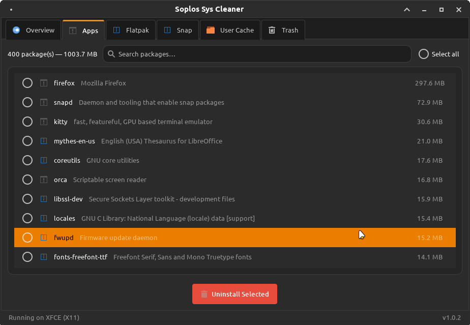
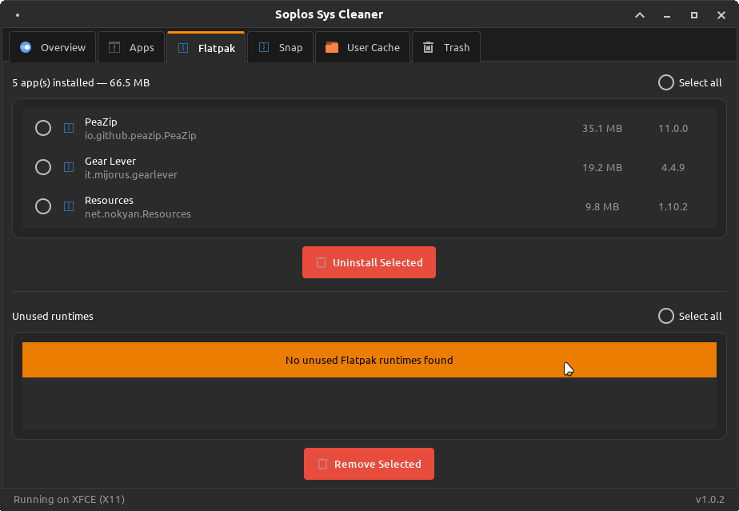
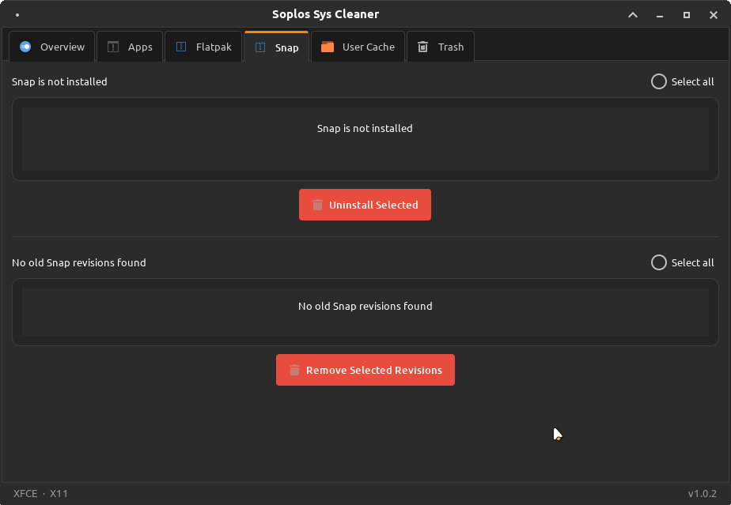
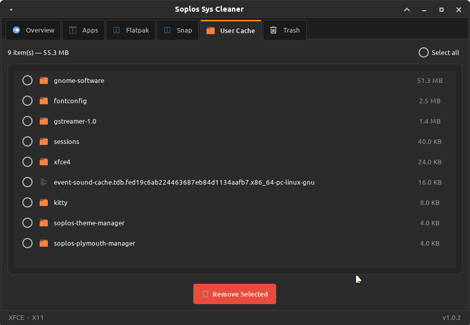
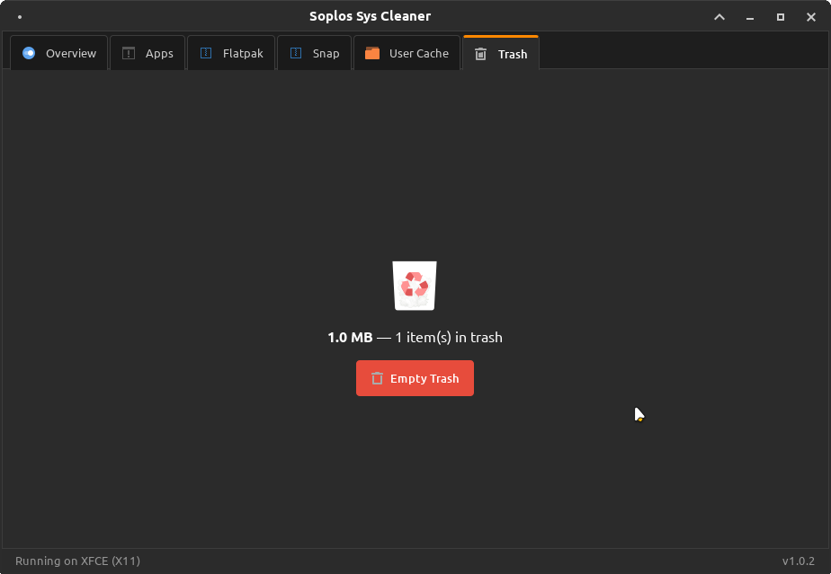
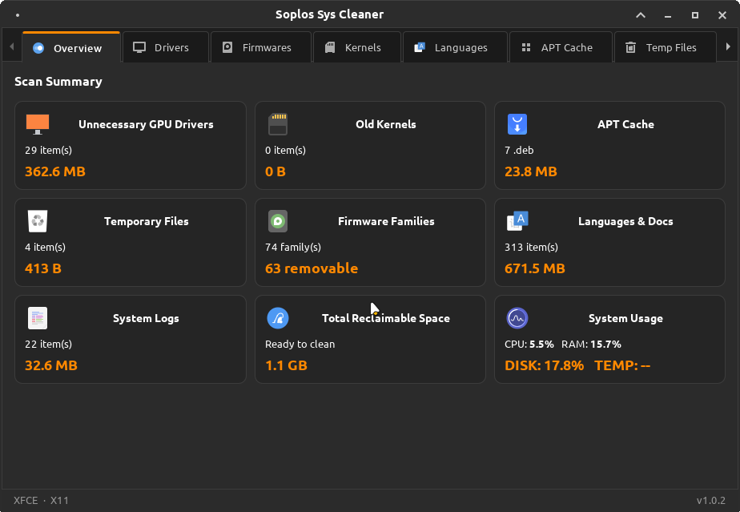
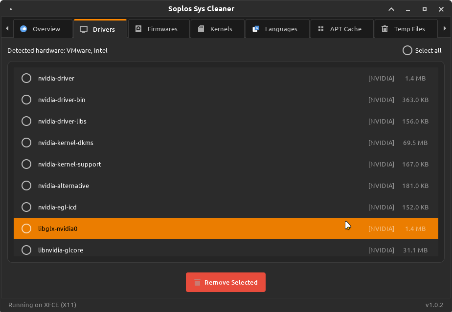
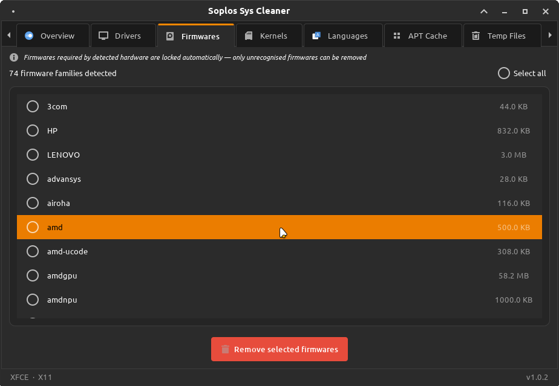
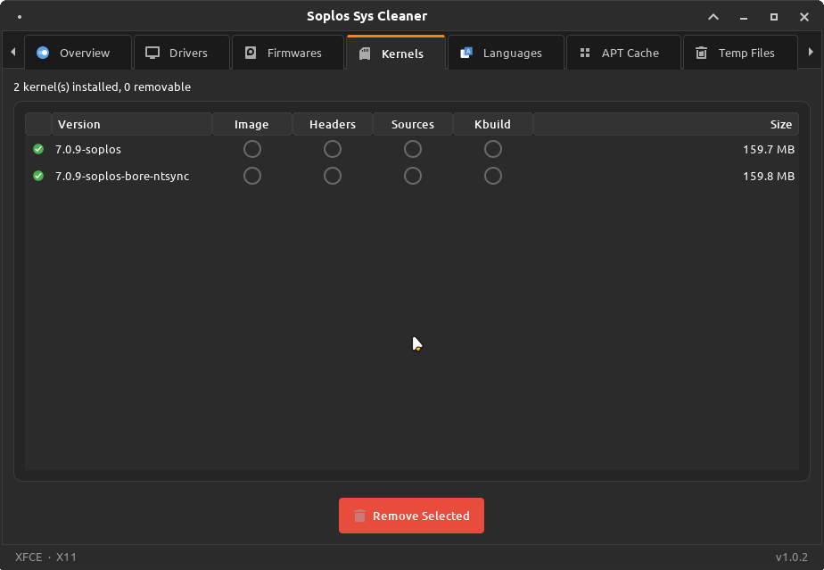
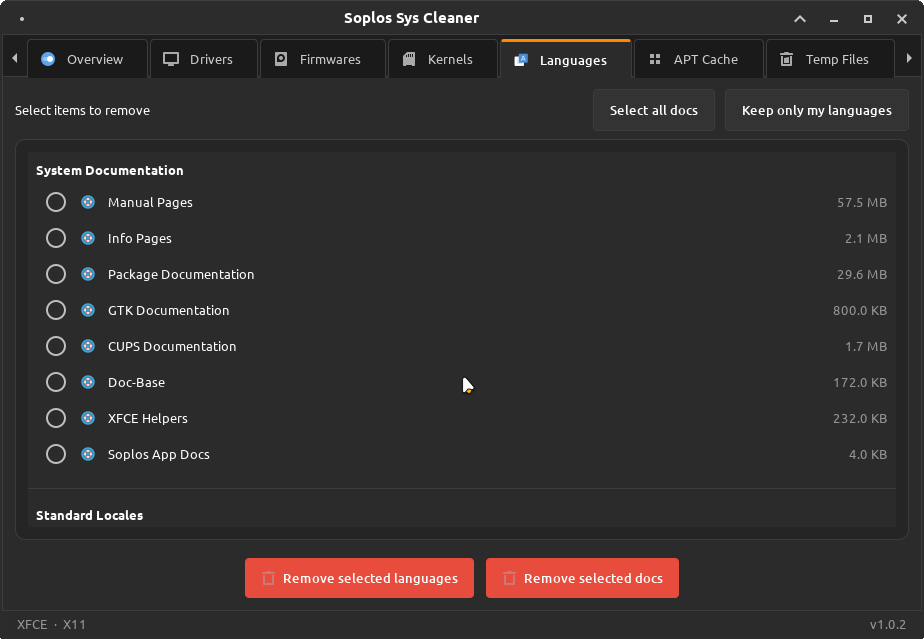
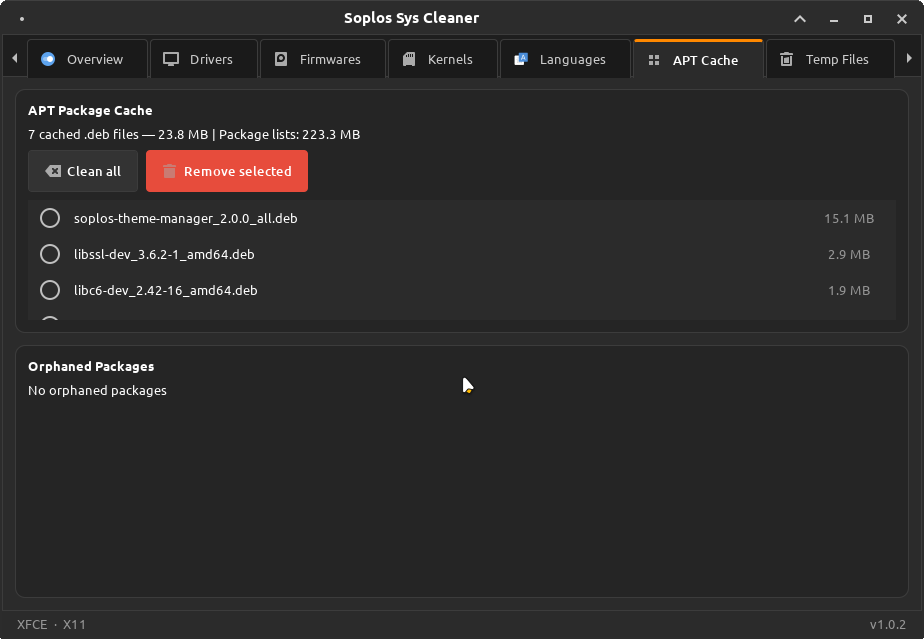
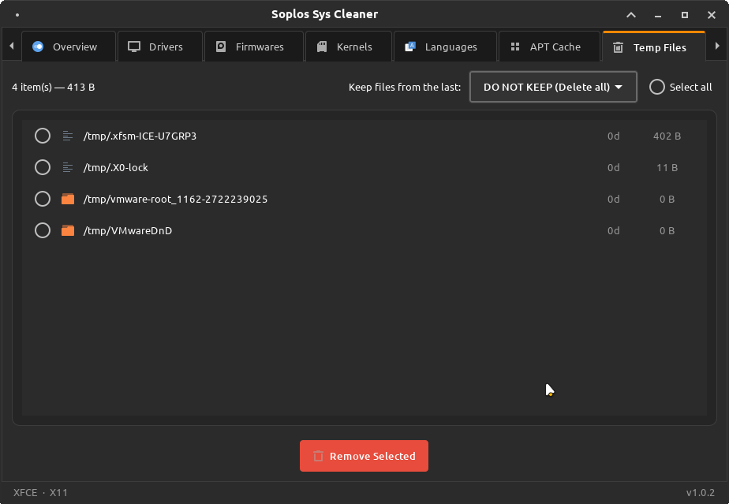
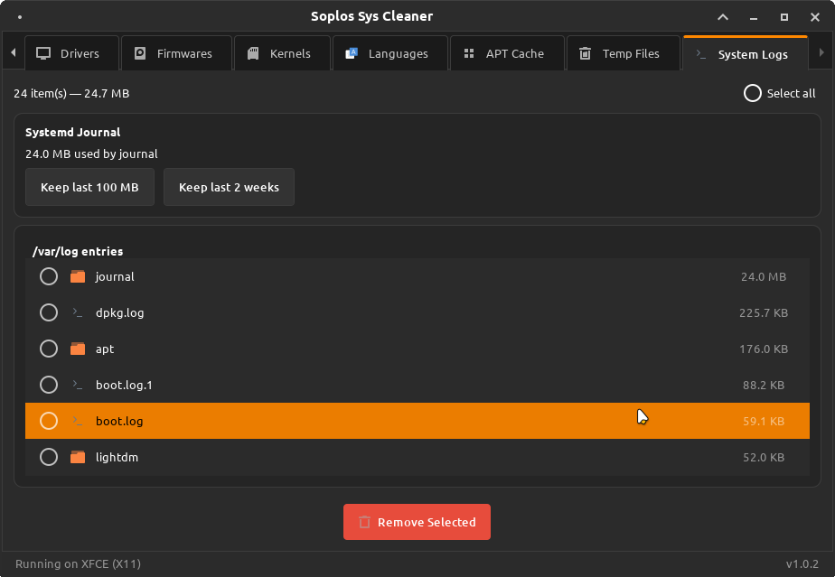